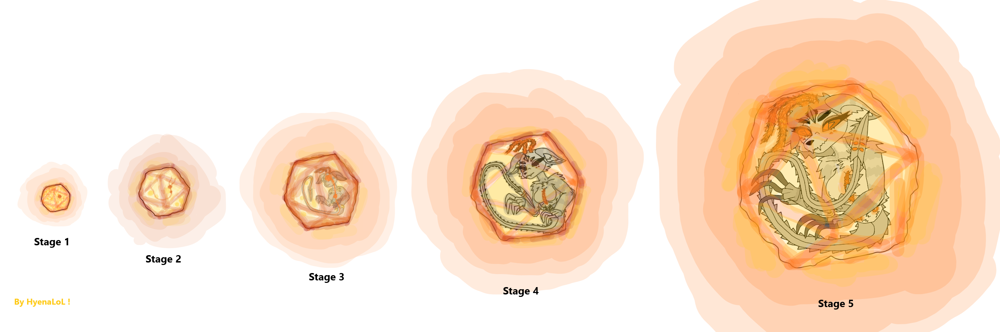
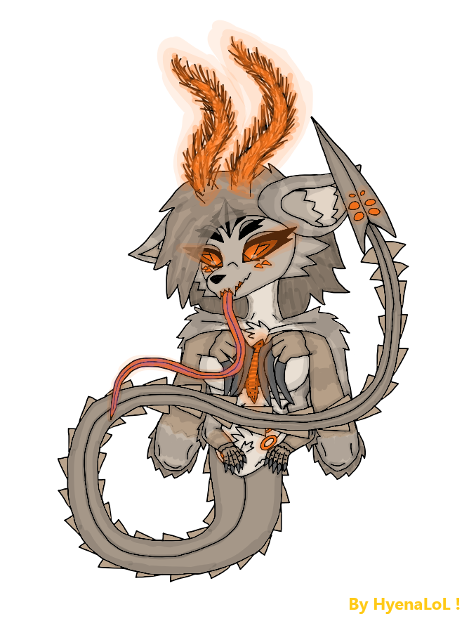
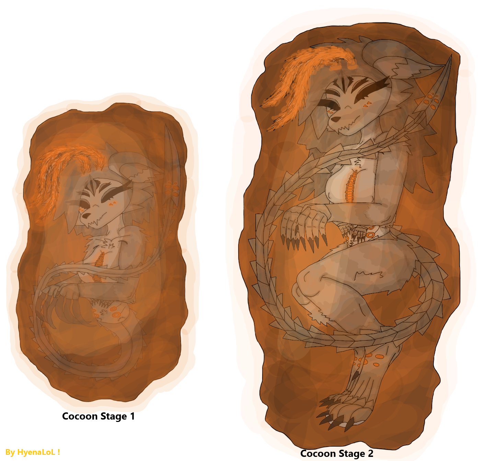
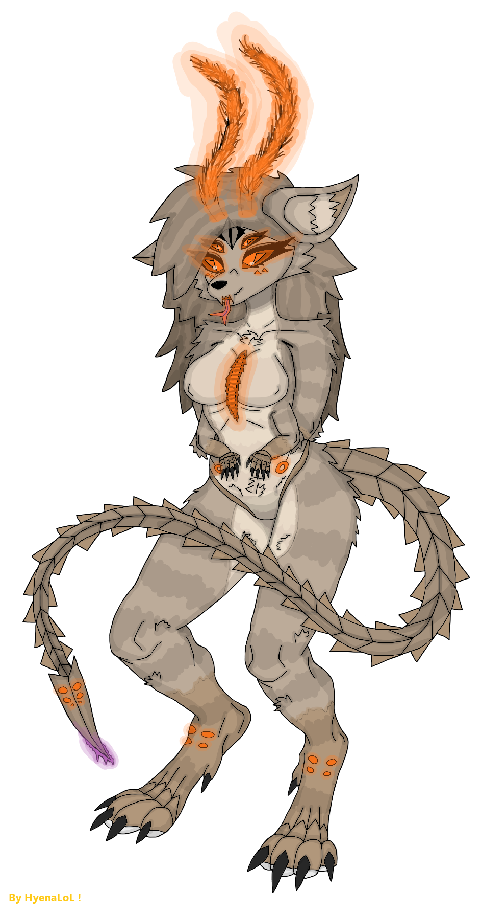
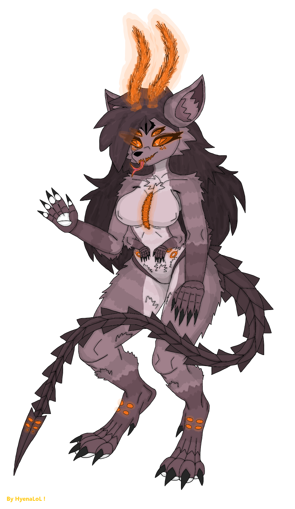
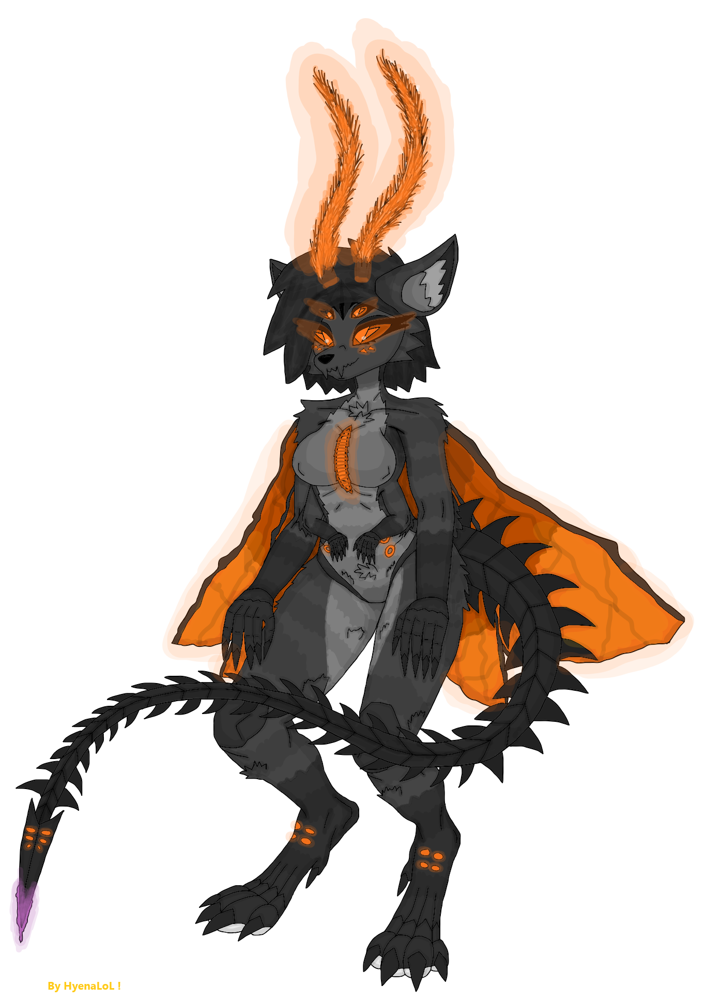
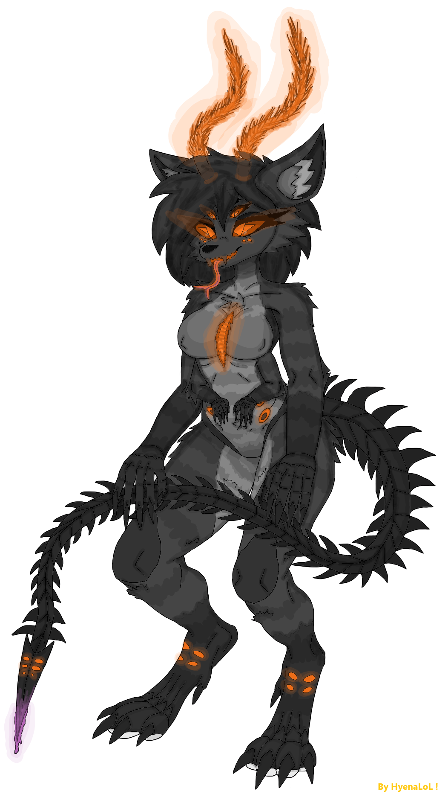
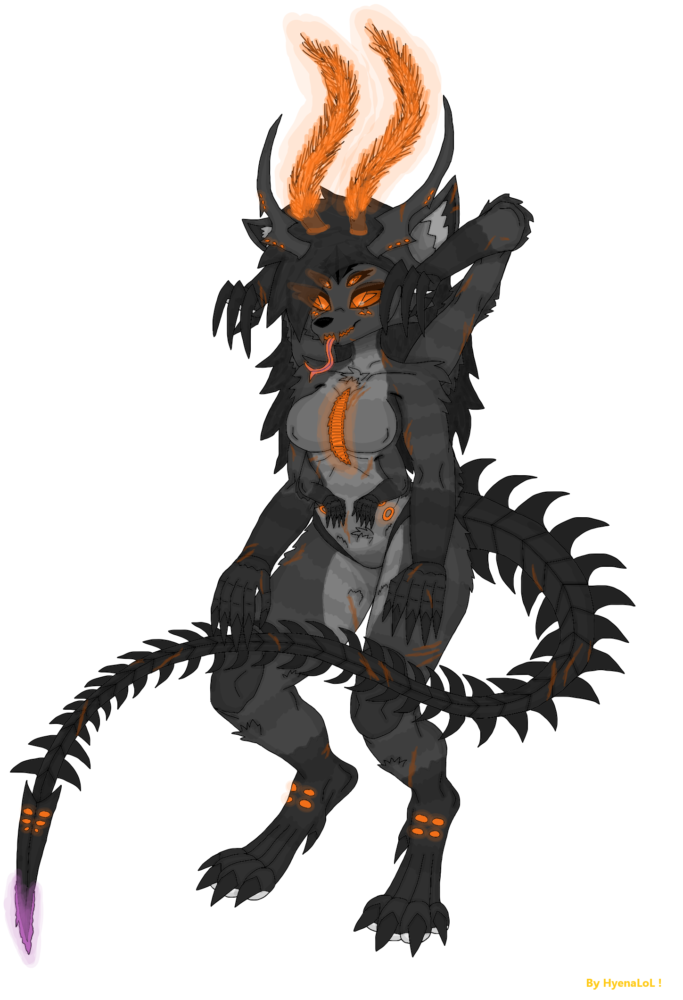
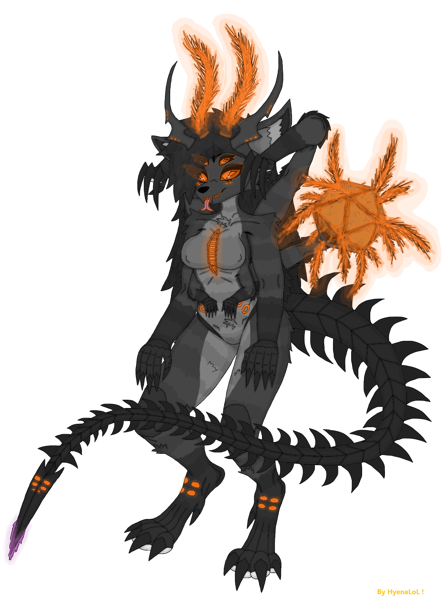
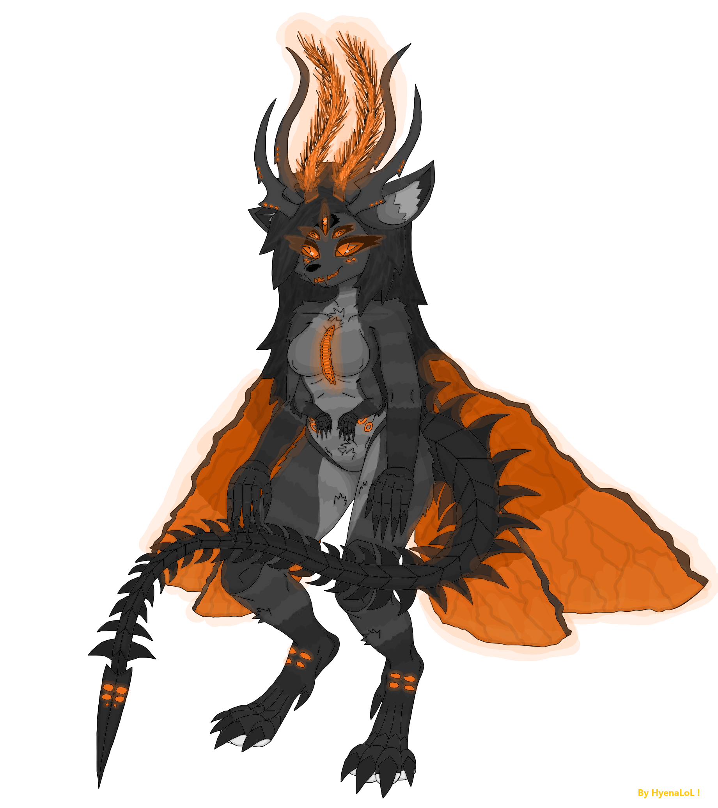

SheFurrs Castes & Stages -
Content -
- Main of Castes & Stages.
- Stage - Egg.
- Stage - Larvae.
- Stage - Cocoonization (Pupae).
- Caste - Nymph (Worker).
- Nanitic.
- Caste - Nurse.
- Caste - Scout.
- Caste - Warrior.
- Stage & Caste - Elites.
- Caste - Psyonic.
- Gamergate & Gamergated queen.
- Caste & Stage of queen - Princess.
- Caste & Stage of queen - Queen.
Main of Castes & Stages -
Overview :
The SheFurrs caste system is not typical. It is not just hive-mind. It is hive-mind + individuality at the same time. Every SheFur is: connected, synchronized, resonant with the hive, but still a separate independent being. IMPORTANT! The caste system is not determined at the egg stage and is not pre-assigned. The caste differentiation begins only during the nymph phase, when the individual reaches functional maturity as a nymph. Body deformations tied to caste after the nymph stage mostly occur in the individual's private living quarters. At this stage the hive itself selects which caste the nymph will develop into. After the selection, the organism undergoes a metamorphosis but unlike insects that form cocoons, this transformation happens externally in real time without cocooning. Also all the castes and stages are different in sizes/weight/height, not strenghtlly. The mechanism is similar to that of termites: the hive regulates the caste outcome during the nymph stage, shaping the individual into its final role.
Universal Traits Across All Castes -
Anabiosis :
All castes and all life stages can enter anabiosis during extreme cold or winter. ONLY queens/princesses still controling the hives and dont have anabiosis. That does not means that all SheFurrs really will be in anabiosis in their hives because the hives have isolation and temperature regulation.
Freezing :
All stages & castes dont die when extremally freezed. They are turn into deep anabiosis.
Swimming Ability :
All SheFurrs are swimmers and can move through SheWorld's chemical-organic slurry.
Shock-Absorbing Pads :
Every adult SheFur has safety pads on their limbs. They work like biological shock absorbers allowing safe landings from ~20 meters.
Nutrient Milk :
All adult SheFurrs produce nutrient milk, regardless of caste. This allows any SheFur to feed if needed.
Pheromones :
All castes and stages have their unique pheromon group for example the warriors have their pheromones. And that works for all castes.
Reproductive Note :
All castes except queens/princesses/gamergates are pseudo-females. They do not possess full reproductive organs. They are not typical females but functionally aligned with the female role in hive biology & lore.
System Structure :
Stages: Egg - Larva - Cocoon (Pupae) - Nymph (Worker).
Castes: Nymph (Worker), Nurse, Scout, Warrior, Elite, Psyonic, Gamergate, Princess, Queen.
Titles: Hive Sister, Battle Sister, Nanitic, Elite, Gamergate, Royal, Mother/queen.
Caste Determination :
Caste is determined at the egg stage as a deffault nymph (worker), then after time by the hive.
Survival :
Important that the meaning of Can live is straightly CAN live, thats not mean they live all this time.
Consuming :
SheFurrs are dangerous to consume in any form. Please do not eat them.
Stage - Eggs -

Appearance :
SheFurr's eggs appear as orange-tinted initially small structures that later grow in size. They pass through five developmental stages. Eggs have a slimy, unsettling, semi-transparent membrane, and are not physically durable, requiring constant protection. Shape is 3D hexagonal form. Eggs emit biolumen light, glowing softly in darkness. Inside the egg we can see: embryonic fluid, embryon, developing organism.
Embryonic Fluid :
Inside the eggs there is a liquid called embryonic fluid. It hardens and turns into a glass-like substance similar to ice or amber - Bright Thingy - which becomes a leftover resource after the larvae hatch from the egg. But the structure of the egg keeps this liquid inside its egg membrane, preventing it from solidifying, Check all info in SheFurWeaponryStuff page.
Growth :
A newly laid egg can fit into a human hand. As it develops, it grows significantly larger. Growth is driven by hive signals and proceeds automatically.
Survival :
Eggs require: comfort, warmth, stable hive conditions. They communicate through chemical and biological signals. Eggs are extremely dependent on the hive environment. Outside the hive, egg survives 5 hours. In Earth-like water, egg survives 8 hours. Excessive star-light exposure can overheat and kill the egg. The egg's slime is a protective membrane, resistant to light fire.
Value :
Other species may consider SheFurr's eggs extremely valuable because they contain biological compounds that could extend lifespan, they may enable development of advanced immunity-boosting medicine. The egg itself does NOT grant longevity, but researching its biology could lead to such breakthroughs. Because of this, SheFurrs defend their eggs to the death.
Stage - Larvae -

Appearance :
Larvae hatch from fully developed eggs. Their coloration is white but slightly dirty like something newly formed with fresh untempered skin. They already have a head shaped similarly to an adult's. Antennae are present but weak and barely functional at this stage. Larvae have: elongated body but not worm-like, two small arms better developed, two main arms, hook-like gripping claws on the main arms, short hair immediately after hatching, long narrow body that transitions into a tail, formed tail-spine ending in a stinger, tongue similar to anteater's. All five eyes are visible, but only the two main eyes function.
Grow :
A larva fits in the hands like a 2-3-year-old human child. Grows into next stage of cocoonization (pupae).
Behavior & Abilities :
Communicate mostly through sounds, do not have a proper language yet, uses a tongue similar to anteater's to drink nutrient milk from hive cells, have weak teeth and weak fangs, are extremely fast agile and flexible, can swim easily, can squeeze through tight spaces, have a weak but functional tail-venom. They live in the larval chamber inside their own hex-cells waiting for nutrient milk from older individuals. Larvae are moderately dangerous, not because of strength, but because of: speed, agility, small size, tail stinger still dangerous even if weak.
Larvae produce larval silk, which is: strong, elastic, sticky when fresh, highly valuable. Only larvae possess the silk-producing organ, shaped like a buoy, colored orange-violet.
Social Development -
Larvae require: comfort, warmth, social interaction, early hive-behavior imprinting. Older individuals teach them basic socials.
Survival :
A larva can survive outside the hive but this is extremely rare, only a few ever grow up outside. Such individuals become Free Blades, independent, hive-less SheFur but only social hive-less not genetic (can be reclaimed).
Stage - Cocoonization (Pupae) -

When a larva grows and completes its early learning, it begins cocoonization inside its personal hive cell. The cocoon is made from strong orange-tinted fibers produced from the larva's own silk.
The shape of the cocoon resembles ant pupae but with SheFurr's biological aesthetics. The silk is extremely durable and inside this cocoon the larva transforms into a nymph eventually emerging into the hive as a new individual.
Appearance :
Made of larval silk, orange-tinted, slightly transparent, resistant to light fire, biologically active. Before forming the cocoon, the larva seals its cell with a membrane door its transparent, orange-glowing, biolumen, protective. This membrane keeps the cocoon chamber stable and safe.
Regeneration :
If the cocoon is damaged. The larva immediately awakens, repairs or rebuilds the cocoon, then returns to metamorphosis. This ensures survival even under stress.
Color Formation :
Inside the cocoon, the individual begins developing its base coloration shifting from white to orange-yellow (dirty-white) and later after becoming a nymph (worker) the individual develops its true final color pattern.
Leg Formation :
The cocoon stage is where legs fully form. True adult legs only develop during cocoonization. This is the stage where the SheFurr's body transitions from larval form to the recognizable adult structure.
It is a critical stage between larva and nymph.
Caste - Nymph (Worker) -

A nymph is a larva that has completed metamorphosis and emerged from its cocoon. At this stage nymph becomes a fully adult SheFur but still: new, white-colored, soft, not sharp or hardened. Nymph is essentially a fresh undeveloped copy of an adult SheFur, waiting to mature into its final caste.
Growth :
This stage is similar to the termite nymph phase. After hatching they function as low-rank workers, over time depending on hive needs they grow into their final caste. They first emerge from their personal cell, then continue developing inside the hive environment. This is a transition stage between larva and full caste specialization.
Color Development :
Nymph coloration forms here shifting from: white to orange-yellow (dirty-white) and eventually into the SheFurr's true adult color palette.
Caste Imprinting :
At the nymph stage, the hive and its elites can choose the future caste of the nymph. They do this by sending: psycho-chemical signals, pheromonal commands, hive-resonance patterns. These signals guide the nymph's development to caste the hive requires.
Different Strategies :
One hive may convert 100% of nymphs into warriors, another hive may carefully assign each nymph to a specific role, another hive may let nymphs develop naturally. Hive tactics vary dramatically.
Survival :
Like larvae nymphs can survive outside the hive but this is rare, survival depends on luck and environment. They can theoretically grow into adults outside the hive. Can live ~30-80 years. Tail venom exists but its weak.
Role :
Nymphs perform all general hive labor except: dangerous tasks, combat. They only fight in extreme emergencies.
Title - Nanitic -
The very first SheFurrs born to a new queen receive the title Nanitic. There can be from 5 to 12 of them. This is an extremely prestigious title granted at birth simply for being among the first offspring of a newly fertilized queen. Their pheromone profile changes automatically so that all other hive members immediately recognize her. Nanitics are rare, unique, foundational to new hive formation. Common only in newly hives, almost absent in older hives.
Role & Status :
Nanitics are usually the queen's first nymphs (workers). The difference is the title and the pheromonal identity. This title grants them: status nearly equal to elites, elevated authority, priority access to queen directives. They are not physically superior, their power comes from their role and pheromonal identity.
Biological Origin :
Nanitics appear automatically in new hives. After a queen is fertilized, the first eggs she produces, are not consciously controlled by her, they are generated automatically by her reproductive system, and these eggs always develop into Nanitics.
Caste - Nurse -

Nurses are one of the most important non-combat caste in the hive. They come in many different color variations within their palette and their fur is: the thickest, the softest, the warmest. They are designed for comfort, care, and nurturing, not for conflict.
Role :
Raise and educate the young, provide emotional and social development, maintain larval chambers, ensure warmth and safety, feed larvae and nymphs, stabilize hive morale. They absolutelly do not participate in conflicts or combat. Their entire purpose is care, teaching, and early development. Nurses are essential because they shape the next generation, they maintain larval and nymphal health, they stabilize hive emotional resonance, they ensure proper development of early castes. Without nurses a hive cannot grow or function in his real power.
Appearance :
larger milk chambers (to feed more effectively), extremely soft fur for warmth, gentle behavior patterns, low aggression, weak venom.
Survival :
They can live ~50-100 years. Because of non-aggressive and gentle behaviors.
Caste - Scout -

Scouts are one of the most prestigious and critically important caste in the entire hive. Their role cannot be overstated, they are the eyes, ears, and sensory extension of the hive far beyond its borders.
Appearance :
A standard adult SheFur, or almost like a warrior, but slimmer, lighter, quieter, and more streamlined. They are built for movement, perception, and survival, not brute force.
Abilities :
Less pronounced sharpness compared to warriors, extremely quiet footsteps, enhanced sensory & pheromone organs, wings similar to hawk wasp wings. Their wings do not allow full flight, but they provide: gliding, controlled falling, rapid directional shifts. Because of their long life and constant exposure to the outside world, scouts accumulate massive experience making them some of the most knowledgeable individuals in the hive.
Sensory Superiority :
Long-range vision, high-precision focus, superior perception compared to all non-elite castes, enhanced environmental awareness, improved chemical and pheromone detection.
They are designed to detect: threats, resources, environmental changes, foreign species, hive-territory boundaries.
Survival :
Scouts are rare but among the longest-living castes (excluding elite castes). Can live ~50-130 years.
Role :
All reconnaissance, mapping territory, tracking threats, locating resources, marking paths, placing pheromone markers, reporting environmental changes, early warning of danger. They operate far from the hive and often alone.
Scouts are not frontline fighters but they can defend themselves.
Caste - Warrior -

Warriors are the standard combat caste of the hive the baseline of SheFurrs.
Appearance :
Sharp, fully formed, heavily built, dangerous, physically imposing. Coloration is usually darker.
Abilities :
Little bit more muscle mass than workers or scouts, stronger body, sharper claws, teeth, and tail-spikes. Warrior venom is: stronger, designed for combat, fully formed.
Survival :
Can live ~60-90 years.
Role :
Warriors perform all general hive tasks just like workers but their task spectrum is broader, their tasks are more dangerous, they are deployed in hazardous zones. They handle defense, patrols, and combat operations.
Combat Specialization :
Warriors are both the Close-Combat Warriors & Ranged Warriors.
Caste & Stage Elite -

The Elite caste represents the highest tier of warriors specialists within the hive. They surpass their predecessors in every measurable way: stronger, faster, more durable, more experienced, more adaptive, more dangerous. Elites do not hatch as elites, they evolve from warriors or ranged fighters.
Transformation :
This transformation is triggered by age, accumulated experience, hive needs. Over time their bodies begin to reshape, deform, and reinforce themselves into elite form.
Appearance :
Elites grow two extra appendages behind their shoulders, they end in hands but with long sharp powerful claws, three upper claws and one smaller lower claw, these limbs provide perfect rear grip, enhanced climbing, additional melee weapons, they remain retracted until needed. They have huge amounts of scars on their body that shows their experience of life. Venom stronger than warriors, designed for disabling large threats. Also they have an extra "horn-antennae".
Abilities :
Very experienced individuals in hive.
Survival :
Elites can live ~100-180 years, or longer.
Role :
Elites are unique because they can perform almost any task in the hive. Their skill spectrum is extremely wide, far beyond any other non-royal caste.
Caste - Psyonic -

Psyonics are one of the rarest and most specialized elite castes in the hive. Hardened reinforced body structures, unique psyonic anatomy not found in any other caste. They are part of the elite's appearance like, but with additional biological features that make them essential for hive-wide resonance and long-distance communication. Also they have an extra "horn-antennae" like elite's.
Appearance :
Elite's body appearance like, have the elite's extra limbs. Have Unique Psyonic Limb, third additional limb grows from the upper back. This limb: resembles an arm but ends not in a hand, ends in a 3D hexagonal sphere covered in multiple micro-antennae capable of receiving and transmitting psyonic-resonance signals. This limb is normally retracted and only deployed when needed. Also have tail with venom. Each signal transmission through this additional limb occurs visually with the shimmering and brightness of biolumen within this 3D hexagonal form.
Survival :
Can live ~120-200 years, or longer.
Role :
Psyonics perform extremely specialized tasks: hive Archive Work, heavy Support in Combat like suppression or resonance disruptionor coordination. Resonance Network Construction, psyonics are responsible for building and maintaining resonance networks. When hive communication becomes too distant, too weak, too unstable - psyonics deploy their special antenna-sphere limb. They drop to all fours and use the limb to: amplify signals, stabilize hive-mind resonance, extend communication range, reconnect distant hive nodes. They are the biological communication towers of the SheFurrs.
Title - Gamergate & Gamergated Queen -
Gamergated queen appears only when a hive loses its queen and princesses. She is essentially a temporary queen chosen to maintain hive stability and continue leadership until a new true queen emerges. If the queen dies, and all her direct heirs princesses also die, then and only then a Gamergate can really exist like Gamergated queen. Also they have an extra elite's "horn-antennae".
Selection Process :
A Gamergate can be chosen from all the castes, is chosen by the surviving hive members. If she satisfies the hive's expectations and rules well, she may be officially elevated to become the new queen named Gamergated queen. The gamergated queen doesnt looks like a normal queen, gamergate is still like she's but slightly gains a size.
Or be pre-chosen by Queen's Choice, queen may pre-select a potential Gamergate during her lifetime. But this only matters if: the queen dies, AND all princesses die. Only then can the chosen individual become a Gamergated queen.
Once accepted by hive invididuals, she begins to transform into a Gamergated queen but her appearance not like queen Its just: easy body deformation, reproductive organ restructuring, hormonal shifts, pheromone evolution. The Gamergated queen will hatch absolutelly normal princesses that will become normal queens.
Biological Differences from a Queen :
A Gamergate does NOT have a queen's egg-sac. Instead she lays eggs in a female-like manner not in the royal biological way, this gives her full control over her reproduction, she cannot mass-produce eggs like a true queen, she is limited but autonomous. This makes her a controlled, stable, temporary monarch, not a full royal.
Survival :
Gamergates live very long lives, often comparable to princesses.
Role if pre-chosen :
Serve the royal caste directly, act as personal attendants and trusted agents, maintain hive order, coordinate castes, manage reproduction until a queen emerges, stabilize hive morale, act as the queen's closest confidants when a queen exists. They are the most trusted individuals in the hive.
Role if becomes Gamergated queen :
Control the hive, reproduction, coordination, and all high-royal work.
Pheromones :
Gamergates receive a unique pheromone signature marking them as personally tied to the royal caste, above all non-royal castes also elites, recognizable instantly by all hive members.
Caste & Stage of Queen - Princess -

Princesses are the super direct heirs of the queen. They are the royal daughters, genetically and socially positioned to inherit the hive. They rare cast up from 1 to 5 princesses in hive ONLY.
Appearance :
Externally, they look very similar to warriors but with differences: they do not possess elite extra limbs because they not elites they royals, they have extremely powerful antennae. They are built for leadership, not combat specialization. Princesses have wings like hawk wasps wings but after becoming a new queen they will cut-off their wings, wings are not for flying they are more for status. These wings allow her to travel and relocate. Also have tail with venom. Also they have an extra "horn-antennae".
Survival :
Can live ~100-200 years. Not like queen because princess is a stage of an royal so she needs firstly to become a queen.
Succession :
If the queen dies, any princess can immediately take her place. She becomes the new queen automatically. If multiple princesses exist and the queen is gone and not pre-selected the future queen then -
Hive Vote -
Most commonly, the hive simply chooses: who they trust, who they prefer, who they believe will lead best.
Princess vs Princess Conflicts -
Conflicts is possible. Princesses may: challenge each other, fight for dominance, attempt to claim the throne by force This can happen even while the queen is still alive especially if one princess is the favorite daughter. Royal politics are messy.
New Hives :
A princess can also choose to: leave her mother's hive, establish her own hive, become a queen of a new colony. This is much harder because she must build everything from scratch, survive alone, gather all, create the first brood without support.
Behavior :
Princesses spend most of their time at self-training, studying hive structure, learning leadership, absorbing knowledge at all spheres. They do this inside the queen's chamber always near their mother.
Role :
Do not fight unless necessary, do not perform non-royal tasks. Focus on leadership, learning, and royal duties. They are the future queens and the hive treats them accordingly.
The Queen -
The Queen is the largest and most powerful individual in the entire hive. She does not require a male, like some ant species she can fertilize herself, and she does this constantly and automatically. She is enormous, biologically complex, the genetic core of the hive, the absolute ruler, the architect of the hive's evolution. Her presence defines the hive's identity.
Appearance :
The Queen's body is radically different from all other castes. Massive Size, she is the largest individual in the hive, huge elongated torso, very long tail, massive head, always opened Romb eye. Antennae Network instead of normal antenna, network of branching antenna structures, resembling tangled branches or lightning arcs, extremely sensitive, capable of reading and controlling hive-wide resonance, these antennae are her primary interface with the hive-mind. She has special openings that can open to release, extremely sticky biological material, used to anchor herself in the royal chamber, ensuring stability during egg production. Egg-Sac Development, her egg-sac starts small but eventually, grows along the entire length of her tail, similar to termite queens, becomes a massive biological structure, capable of producing numbers of eggs.
The queen also has exposed protective ribs between her chest and hind legs, along her waist and hips.
Survival :
The queens can live unbelievable amounts of years like ~100-1200 years (Including princess stage time).
Genetic Control :
The Queen has full control over: the hive's genetics, caste distribution, mutation suppression, mutation encouragement, gene filtering, gene creation (slow and difficult). Every hive (not colony) is genetically unique because each queen shapes her hive's genome.
Genetic Engineering Organ :
Inside her body is an organ directly connected to her brain, the Queen's Gene-Engineering Organ, responsible for genetic editing, allows her to remove unwanted traits, or slowly create new ones. This organ is the biological equivalent of a genetic laboratory.
Role :
The Queen's responsibilities exceed all other castes combined. She handles all the hive or colony, genetic management, caste distribution, long-term planning, global resonance control, reproduction, communication, coordination, hive strategies & tactics. Her spectrum of duties is far beyond anything any other caste can perform.